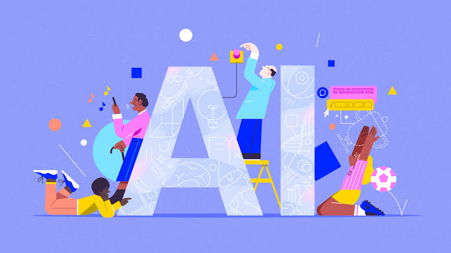

Что такое AI?
Искусственный интеллект (AI) — это программа или система, которая имитирует человеческие способности: учится на данных, распознает образы и речь, принимает решения. В отличие от обычных программ с жесткими алгоритмами, AI находит закономерности в больших объемах информации и адаптируется. Это не робот и не сознание, а математический инструмент, который мы используем в голосовых помощниках, рекомендациях и чат-ботах.

Для чего используется ИИ?
ИИ используется для автоматизации задач, ускорения работы и решения проблем, с которыми человек справляется медленно или с ошибками. Вот основные сферы применения:
- Бизнес и финансы: анализ рынков, прогнозирование продаж, выявление мошенничества с картами, автоматическая обработка документов.
- Медицина: анализ снимков (МРТ, рентген) для поиска болезней, разработка новых лекарств, персональный подбор лечения.
- Транспорт: автопилоты, оптимизация маршрутов доставки, контроль состояния водителей.
- Образование: персональные программы обучения, автоматическая проверка заданий, репетиторы-чат-боты.
- Повседневная жизнь: голосовые помощники (Алиса, Siri), рекомендации фильмов и музыки, умные камеры и пылесосы.
- Промышленность: контроль качества на производстве, предсказание поломок оборудования, роботизация складов.
- Творчество и IT: генерация текстов, картинок и кода, помощь в написании музыки и дизайне.